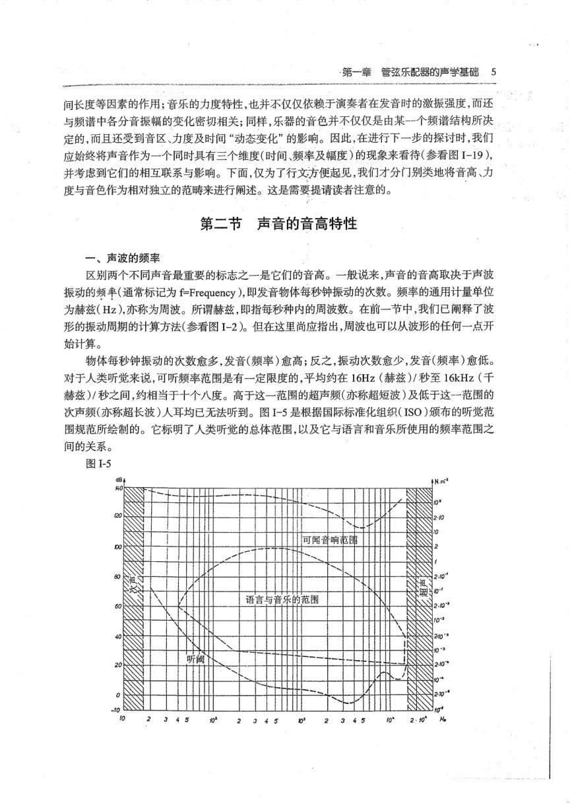

PDF 第 29 页
杨立青上 · 印刷 p.5 · 第一章 管弦乐配器的声学基础 · 音色
第一章管弦乐配器的声学基础5
间长度等因素的作用；音乐的力度特性，也并不仅仅依赖于演奏者在发音时的激振强度，而还
与频谱中各分音振幅的变化密切相关；同样，乐器的音色并不仅仅是由某一个频谱结构所决
定的，而且还受到音区、力度及时间“动态变化”的影响。因此，在进行下一步的探讨时，我们
应始终将声音作为一个同时具有三个维度（时间、频率及幅度）的现象来看待（参看图I-19)，
并考虑到它们的相互联系与影响。下面，仅为了行文方便起见，我们才分门别类地将音高、力
度与音色作为相对独立的范畴来进行阐述。这是需要提请读者注意的。
第二节声音的音高特性
一、声波的频率
区别两个不同声音最重要的标志之一是它们的音高。一般说来，声音的音高取决于声波
振动的频率（通常标记为f=Frequency），即发音物体每秒钟振动的次数。频率的通用计量单位
为赫兹(Hz)，亦称为周波。所谓赫兹，即指每秒种内的周波数。在前一节中，我们已阐释了波
形的振动周期的计算方法（参看图I-2）。但在这里尚应指出，周波也可以从波形的任何一点开
始计算。
物体每秒钟振动的次数愈多，发音(频率)愈高；反之，振动次数愈少，发音(频率)愈低。
对于人类听觉来说，可听频率范围是有一定限度的，平均约在16Hz（赫兹）/秒至16kHz（千
赫兹）/秒之间，约相当于十个八度。高于这一范围的超声频(亦称超短波)及低于这一范围的
围规范所绘制的。它标明了人类听觉的总体范围，以及它与语言和音乐所使用的频率范围之
间的关系。
图1-5
可闻音响范邮
语言与音乐的范围
0